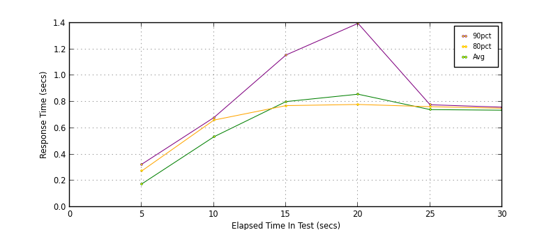
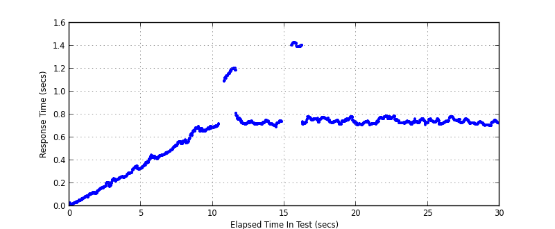
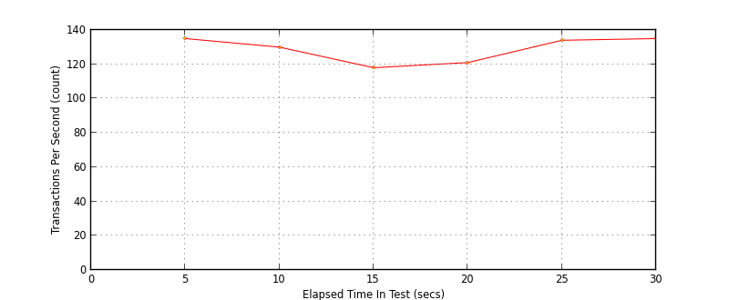
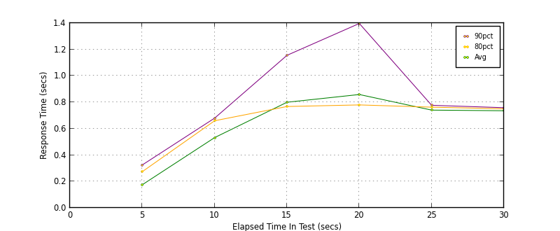
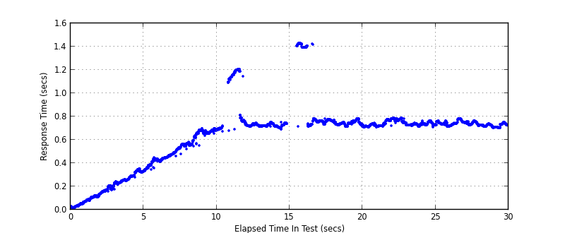

Performance Results Report
Summary
transactions: 3983
errors: 52
run time: 30 secs
rampup: 10 secs
test start: 2013-12-17 17:28:58
test finish: 2013-12-17 17:29:28
time-series interval: 5 secs
workload configuration:
| group name | threads | script name |
|---|
| user_group-1 | 100 | read_user.py |
All Transactions
Transaction Response Summary (secs)
| count | min | avg | 80pct | 90pct | 95pct | max | stdev |
|---|
| 3983 | 0.008 | 0.635 | 0.754 | 0.773 | 1.117 | 1.432 | 0.268 |
Interval Details (secs)
| interval | count | rate | min | avg | 80pct | 90pct | 95pct | max | stdev |
|---|
| 1 | 677 | 135.40 | 0.008 | 0.176 | 0.275 | 0.326 | 0.332 | 0.352 | 0.100 |
| 2 | 654 | 130.80 | 0.332 | 0.534 | 0.661 | 0.681 | 0.684 | 0.696 | 0.109 |
| 3 | 594 | 118.80 | 0.687 | 0.802 | 0.771 | 1.157 | 1.197 | 1.205 | 0.166 |
| 4 | 609 | 121.80 | 0.715 | 0.858 | 0.780 | 1.397 | 1.423 | 1.432 | 0.245 |
| 5 | 674 | 134.80 | 0.708 | 0.741 | 0.763 | 0.778 | 0.783 | 0.786 | 0.021 |
| 6 | 675 | 135.00 | 0.701 | 0.736 | 0.751 | 0.760 | 0.772 | 0.784 | 0.018 |
Graphs
Response Time: 5 sec time-series

Response Time: raw data (all points)

Throughput: 5 sec time-series

Custom Timer: get_tweets
Timer Summary (secs)
| count | min | avg | 80pct | 90pct | 95pct | max | stdev |
|---|
| 3880 | 0.008 | 0.634 | 0.753 | 0.773 | 1.117 | 1.431 | 0.268 |
Interval Details (secs)
| interval | count | rate | min | avg | 80pct | 90pct | 95pct | max | stdev |
|---|
| 1 | 677 | 135.40 | 0.008 | 0.176 | 0.275 | 0.326 | 0.332 | 0.352 | 0.100 |
| 2 | 652 | 130.40 | 0.332 | 0.533 | 0.660 | 0.680 | 0.684 | 0.696 | 0.109 |
| 3 | 593 | 118.60 | 0.673 | 0.800 | 0.768 | 1.156 | 1.197 | 1.205 | 0.165 |
| 4 | 609 | 121.80 | 0.715 | 0.859 | 0.780 | 1.397 | 1.423 | 1.431 | 0.246 |
| 5 | 674 | 134.80 | 0.708 | 0.741 | 0.763 | 0.777 | 0.783 | 0.786 | 0.021 |
| 6 | 675 | 135.00 | 0.701 | 0.736 | 0.751 | 0.759 | 0.772 | 0.784 | 0.018 |
Graphs
Response Time: 5 sec time-series

Response Time: raw data (all points)

Throughput: 5 sec time-series